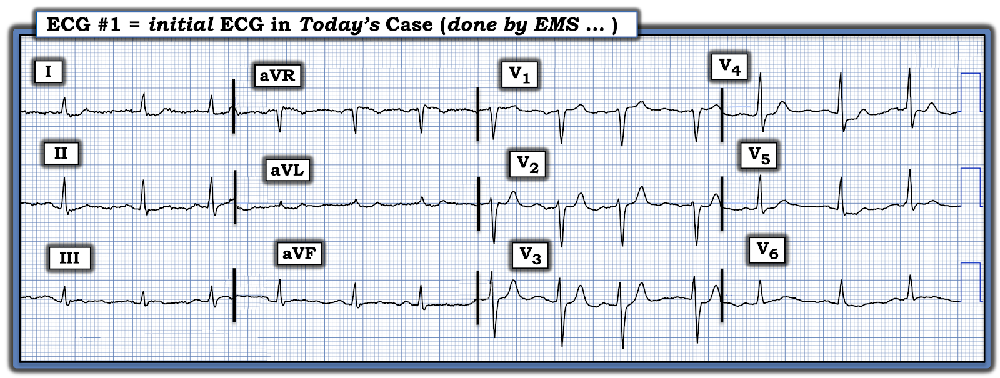
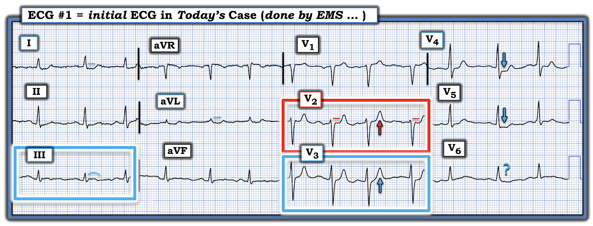
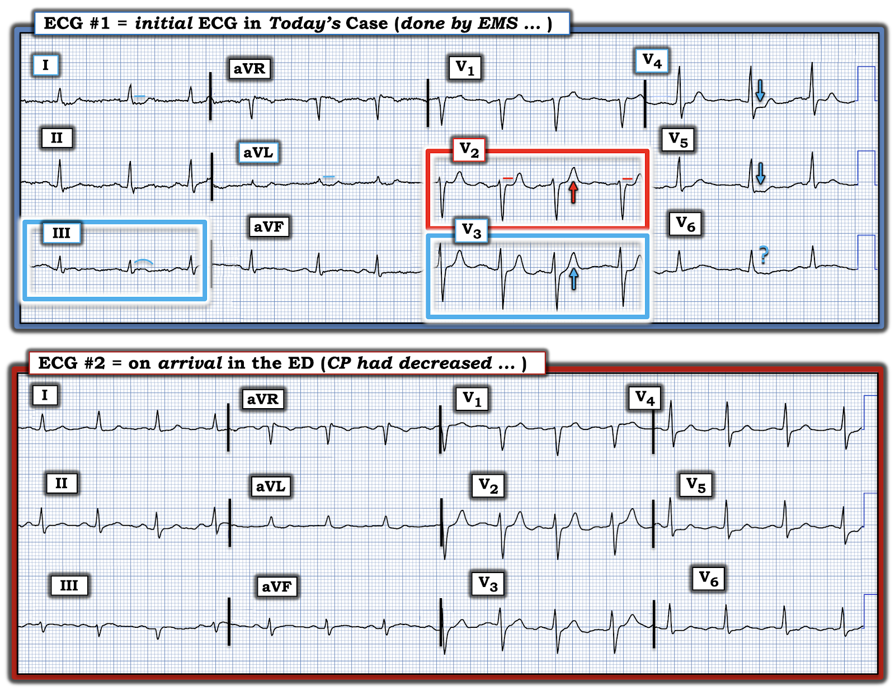
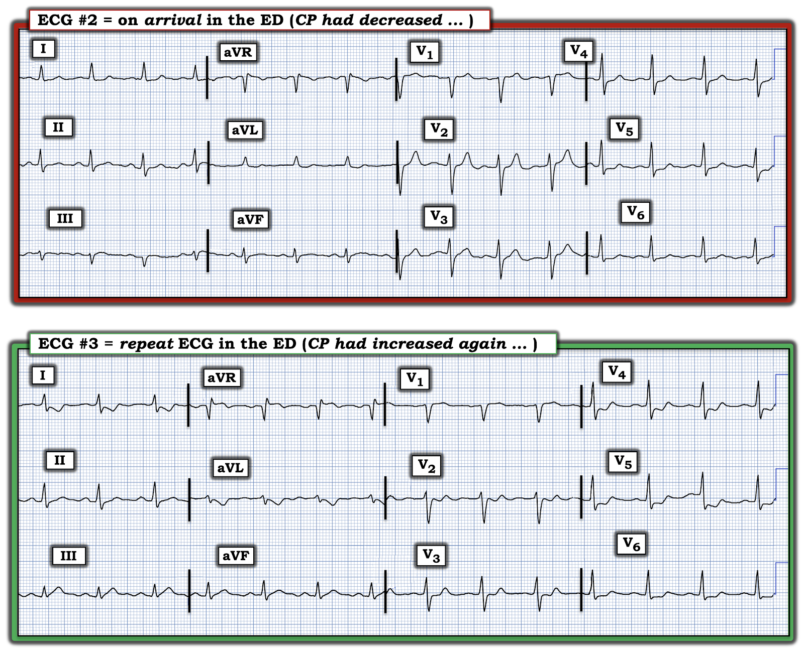

ECG Blog #467 — Phòng thông tim đã bị hủy kích hoạt
Tôi nhận được điện tâm đồ ở Hình-1 — ghi từ một người đàn ông trước đây khỏe mạnh, khoảng 60 tuổi, đã gọi EMS (Emergency Medical Services — đội cấp cứu ngoài viện) vì CP “nóng rát” dữ dội, mới khởi phát (đau ngực — Chest Pain), lan lên hàm và cổ họng.
Khi thấy điện tâm đồ ở Hình-1 — kíp EMS đã kích hoạt phòng thông tim (cath lab).
- CÂU HỎI: Bạn có đồng ý với quyết định kích hoạt phòng thông tim này của kíp EMS không?


Suy nghĩ của tôi về CA BỆNH hôm nay:
Đôi khi — “Phải có mặt ở đó mới biết!” Những dòng chữ trên giấy trong đoạn mở đầu của tôi (viết ở trên) — đã nói lên mối lo rằng người đàn ông khoảng 60 tuổi này có thể đang có một biến cố tim cấp. Nếu kíp EMS tại hiện trường cũng cảm nhận mối lo tương tự — thì ngay cả trước khi xem điện tâm đồ ban đầu, bệnh nhân đã thuộc nhóm nguy cơ cao hơn có biến cố tim cấp.
- Do đó — bất kỳ bất thường nào trên điện tâm đồ ban đầu cũng phải gây lo ngại đáng kể.
Và — điện tâm đồ ban đầu ở Hình-1 không bình thường ...
- Nhịp xoang (sóng P nhỏ nhưng dương ở chuyển đạo II ) — với khoảng R-R có thay đổi đôi chút (có lẽ là loạn nhịp xoang).
- Mọi khoảng (PR, QRS, QTc) đều bình thường — trục mặt phẳng trán cũng vậy (khoảng +50 độ). Không lớn buồng tim.
- Về Thay đổi sóng Q-R-S-T: Không có sóng Q — và tăng tiến sóng R bình thường (vùng chuyển tiếp, nơi sóng R trở nên cao hơn độ sâu sóng S, xảy ra bình thường giữa chuyển đạo V3 đến V4).
NHƯNG — có những dấu hiệu kín đáo-nhưng-quan trọng liên quan đến hình dạng sóng ST-T. Tôi đã đánh dấu chúng ở Hình-2.
- Bạn có đồng ý không?


Các dấu hiệu bất thường ở Hình-2:
- "Mắt" tôi lập tức bị hút về chuyển đạo V2 (trong hình chữ nhật ĐỎ). Trên một bản ghi bình thường, ở chuyển đạo V2 và V3 phải có ST chênh lên nhẹ, dốc lên thoai thoải. Điều này không thấy ở chuyển đạo V2 (đường thẳng ĐỎ tôi vẽ ở chuyển đạo này làm nổi bật tình trạng thẳng đuỗn bất thường của đoạn ST). Ở bệnh nhân có CP mới — nhận ra dấu hiệu kín đáo-nhưng-quan trọng này là điều khiến tôi, chỉ trong vài giây, nghi ngờ một OMI (nhồi máu cơ tim do tắc — Occlusion-based MI) thành sau đang diễn tiến.
- Ngoài ra — sóng T ở chuyển đạo V2 trông cao-hơn-mức-đáng-có so với biên độ QRS khiêm tốn ở chuyển đạo này (mũi tên ĐỎ ở chuyển đạo V2). Điều này gợi ý có thể đã có phần nào tái tưới máu tự phát của một OMI thành sau đang diễn tiến.
- Ủng hộ cho nghi ngờ OMI thành sau đang diễn tiến của tôi — là dấu hiệu tương tự ở chuyển đạo V3 kế bên: thêm một sóng T trông cao-hơn-mức-đáng-có (trong hình chữ nhật XANH).
- Mọi nghi ngờ tôi có thể còn có về việc những dấu hiệu ở chuyển đạo V2 và V3 — phải thừa nhận là kín đáo — có thật hay không, đã lập tức bị xua tan bởi ST chênh xuống dạng bậc thềm (shelf-like) ở chuyển đạo V4. Không đời nào hình dạng và mức ST chênh xuống như thế ở một chuyển đạo giữa ngực lại là "bình thường" (nhất là khi bản ghi này không có biên độ sóng R tăng, nên loại trừ "tăng gánh" thất trái do LVH là nguyên nhân gây ST chênh xuống).
- Các dấu hiệu khác của ST thẳng đuỗn kín đáo nhưng bất thường cũng thấy ở chuyển đạo V5, I và aVL.
- Rồi còn đoạn ST dạng vòm (coving) nhưng không chênh lên ở chuyển đạo III — mà tôi thấy đáng lưu ý, dù chưa rõ ý nghĩa.
Những dấu hiệu kín đáo này có ý nghĩa gì?
Khi đọc những điện tâm đồ như bản ghi ban đầu của ca hôm nay — chúng ta cần nhớ rằng chúng ta không cố gắng "khẳng định" (rule in) một STEMI cấp.
- Thay vào đó — chúng ta cần nhớ rằng người đàn ông khoảng 60 tuổi này đến với CP mới mang tính chất tim mạch, điều lập tức xếp ông vào nhóm nguy cơ cao hơn có biến cố tim cấp. Vì vậy, khi không có điện tâm đồ nền trước đó để so sánh — mọi dấu hiệu bất thường trên bản ghi ban đầu của ông phải được xem là cấp tính cho đến khi chứng minh được điều ngược lại.
- Không chấp nhận rằng quá trình tắc động mạch vành cấp là "động" chứ không "tĩnh" — là phớt lờ sinh lý bệnh của quá trình này. Đó cũng là cách tốt nhất để bỏ sót rất nhiều OMI cấp cần thông tim sớm kèm PCI (tức là, xem các công bố gần đây của Ricci, Smith và cs. — Ann Emerg Med, 2025 — và — McClaren, Smith và cs. — JACC Adv. 2024,3:101314 — với phần điểm lại chi tiết sinh lý bệnh này trong Podcast #2 ở My ECG Podcast tab ở đầu mỗi trang của ECG Blog này).
Nhận định:
Ở bệnh nhân có CP mới này — điện tâm đồ ở Hình-1 phải gợi ý khả năng một OMI thành sau đang tiến triển.
- Dù hoàn toàn thừa nhận rằng điện tâm đồ ban đầu (và rằng nhiều bác sĩ can thiệp sẽ không đưa bệnh nhân này vào phòng thông tim chỉ dựa trên một điện tâm đồ duy nhất này, trừ khi bệnh nhân đau ngực kháng trị) không thỏa tiêu chuẩn STEMI — lý do sinh lý khiến không có những bất thường rõ hơn có thể là hậu quả của phần nào tái tưới máu tự phát (gợi ý bởi các sóng T cao-hơn-dự-kiến một cách không tương xứng ở các chuyển đạo trước V2,V3).
- Điều này có thể giải thích vì sao bản ghi này không có ST chênh lên (tức là, giai đoạn "giả bình thường hóa" — xảy ra giữa giai đoạn ST chênh lên và giai đoạn thay đổi ST-T tái tưới máu).
- ST dạng vòm ở chuyển đạo III có phải là hậu quả của OMI thành dưới đi kèm hay không thì chưa chắc chắn nếu chỉ dựa trên một điện tâm đồ duy nhất này.
- Cuối cùng, xét tuổi bệnh nhân và tính lan tỏa của các bất thường ST-T nêu trên — có thể có bệnh nhiều nhánh mạch vành nền.
- ĐIỀU CỐT LÕI: Cần đánh giá thêm (các điện tâm đồ liên tiếp, Troponin) kèm chuyển ngay tới cơ sở có khả năng thông tim.
==================================
Ca bệnh tiếp diễn:
Bệnh nhân được chuyển ngay tới khoa cấp cứu (ED) gần nhất. Điện tâm đồ được ghi lại khi đến ED — như trình bày ở Hình-3.
- Bác sĩ ED nhận định cơn CP "nóng rát" kèm buồn nôn của bệnh nhân là GERD (trào ngược thực quản). Do đó — điều trị ban đầu là một hỗn hợp thuốc tiêu hóa (GI cocktail).
- CP của bệnh nhân đã giảm vào thời điểm ghi điện tâm đồ lặp lại (ở phần dưới Hình-3). Do đó — phòng thông tim đã bị hủy kích hoạt.
CÂU HỎI:
- Bạn có đồng ý với cách xử trí này tại ED không?
- — Điện tâm đồ #2 có phải là một bản ghi không có gì đáng chú ý không?


Suy nghĩ của tôi về Hình-3:
Có những khác biệt kín đáo-nhưng-quan trọng giữa 2 điện tâm đồ ở Hình-3.
- Điểm MẤU CHỐT: Rất dễ bỏ qua những khác biệt này nếu các bản ghi không được đặt cạnh nhau để tiện so sánh từng chuyển đạo một.
- Trục mặt phẳng trán có thay đổi nhẹ (tức là, QRS đẳng điện hiện thấy ở chuyển đạo aVF của điện tâm đồ #2 cho thấy trục nằm ngang hơn). Sự dịch trục nhẹ này có lẽ giải thích phức bộ QS từng lúc mà giờ ta thấy ở chuyển đạo III. Dù vậy — tôi không nghĩ đã có thay đổi ST-T đáng kể nào ở các chuyển đạo chi.
Ở các chuyển đạo trước ngực:
- Sóng T ở chuyển đạo V2 và V3 trông kém nổi bật hơn ở điện tâm đồ #2.
- Ở chuyển đạo V4,V5,V6 của điện tâm đồ #2 có ít trôi đường nền hơn và ít nhiễu đường nền hơn. Do đó — việc đánh giá hình dạng ST-T đáng tin cậy hơn nhiều trên điện tâm đồ ghi lại này. Nếu như tôi đặt một dấu hỏi XANH ở hình dạng ST-T thay đổi của chuyển đạo V6 trên điện tâm đồ #1 — thì giờ không còn nghi ngờ gì là có ST dẹt bất thường kèm ST chênh xuống nhẹ ở chuyển đạo V4,V5,V6.
ĐIỀU CỐT LÕI: Nhìn chung – tôi nghĩ thay đổi ST-T ở điện tâm đồ #2 có thể nhẹ hơn một chút. Điều này có thể được giải thích bởi việc CP của bệnh nhân đã giảm vào lúc ghi lại điện tâm đồ. Nhưng tình trạng ST dẹt và chênh xuống chắc chắn ở chuyển đạo V4,V5,V6 là có thật — và với bệnh sử CP dữ dội mới xuất hiện — phải coi đây là thiếu máu cục bộ cấp cho đến khi chứng minh được điều ngược lại.
- Lẽ ra không nên hủy lệnh kích hoạt phòng thông tim chỉ dựa trên điện tâm đồ thứ 2 này.
==================================
Ca bệnh tiếp diễn:
- Troponin ban đầu âm tính.
- Dù CP của bệnh nhân đã giảm khi đến ED — nó chưa bao giờ hết hẳn.
- Một lúc sau, khi vẫn còn ở ED — CP của bệnh nhân nặng lên, và lúc đó điện tâm đồ #3 được ghi (tôi đặt cạnh điện tâm đồ #2 ở Hình-4).
CÂU HỎI:
- Đọc 2 điện tâm đồ ở Hình-4 thế nào trong bối cảnh lâm sàng của ca này?
- — Cần làm gì?


TRẢ LỜI:
Nhìn điện tâm đồ #3 — câu trả lời giờ đã rõ ràng.
- Ở điện tâm đồ #3 — giờ ta thấy rõ ST-T tối cấp ở chuyển đạo III và aVF — kèm thay đổi soi gương (reciprocal) rõ rệt ở các chuyển đạo bên cao I và aVL.
- Các sóng T trước đó cao ở chuyển đạo V2 và V3 — nay đã được thay bằng ST chênh xuống rõ rệt, bắt đầu từ chuyển đạo V2 và kéo dài đến tận chuyển đạo V6.
- Giờ ST chênh lên nhiều hơn ở chuyển đạo aVR.
- NHẬN ĐỊNH: Có một OMI dưới-sau cấp rõ ràng đang diễn ra. Đối chiếu thời điểm và mức độ CP của bệnh nhân với các thay đổi trên các điện tâm đồ liên tiếp gợi ý rằng những sóng T cao-hơn-dự-kiến thấy ban đầu ở chuyển đạo V2,V3 đúng là phản ánh tái tưới máu tự phát — NHƯNG — việc CP nặng trở lại cùng lúc với điện tâm đồ #3 và thay đổi điện tâm đồ nặng lên ở gần như cả 12 chuyển đạo gợi ý đã có tắc lại tự phát. Tính lan tỏa của các thay đổi ST-T ở điện tâm đồ #3 gợi ý có thể có bệnh nhiều nhánh mạch vành nền.
Thông tim đã được thực hiện:
- Bệnh nhân có bệnh nhiều nhánh mạch vành — gồm tổn thương LAD 90% — tổn thương LCx 70% — và "gần tắc mạn tính" (chronic near-occlusion) của RCA.
- Bệnh nhân được lên lịch phẫu thuật bắc cầu chủ vành (CABG).
Bài học cần rút ra:
- Ở bệnh nhân nguy cơ cao hơn (như bệnh nhân trong ca hôm nay) — phát hiện những bất thường điện tâm đồ kín đáo trên điện tâm đồ ban đầu có thể cực kỳ quan trọng. ST chênh lên rõ rệt sẽ không thấy ở 1/3 số ca tắc động mạch vành cấp trở lên. Nhất là khi bệnh sử triệu chứng lúc tăng lúc giảm — thay đổi điện tâm đồ có thể kín đáo nếu bản ghi được ghi trong giai đoạn "giả bình thường hóa".
- Troponin ban đầu có thể âm tính dù đang có nhồi máu cấp (ngay cả khi dùng Troponin độ nhạy cao). Về mặt sinh lý — điều này có thể xảy ra do tắc động mạch vành rất ngắn, rồi gần như ngay sau đó là tái tưới máu tự phát. Đó là lý do việc đối chiếu lâm sàng từng điện tâm đồ được ghi, kèm ghi chú có hay không có CP và mức độ CP, lại quan trọng đến vậy.
- Cái gì tự mở ra — cũng có thể dễ dàng tự đóng lại. Vì lý do này — dù CP có thể giảm và điện tâm đồ có thể "cải thiện" — nếu đang có một OMI diễn tiến, bệnh nhân vẫn cần thông tim sớm kèm PCI để ngăn tắc lại.
- Ở bệnh nhân có OMI đang diễn tiến — CP giảm không giống với CP đã hết hoàn toàn. Chừng nào còn bất kỳ CP nào — biến cố cấp vẫn đang diễn ra (nên vẫn cần thông tim sớm để tái tưới máu).
- Mô thức chờ đến khi thỏa tiêu chuẩn STEMI đã lỗi thời và nguy hiểm. Ngay cả khi cuối cùng vẫn thông tim — thời gian quý báu đã bị lãng phí, có thể mất đi phần cơ tim quý giá do sự chậm trễ này (như đã xảy ra trong ca hôm nay).
==================================
Lời cảm ơn: Xin cảm ơn Cortland Ashbrook (từ Spokane, WA, USA) đã chia sẻ ca bệnh và bản ghi này.
==================================